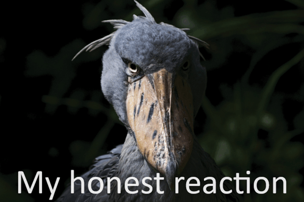

Birds are a diverse group of warm-blooded vertebrates that are unique in having feathers. These feathers serve various purposes, including insulation, flight, and display. Birds also possess beaks, toothless jaws that are adapted for different feeding habits. They lay hard-shelled eggs and have a high metabolic rate, requiring them to consume a lot of food.
Birds have a four-chambered heart, ensuring efficient oxygenation of their blood. Their lightweight skeletons, hollow bones, and air sacs further aid in flight. While many birds are capable of flight, some, like penguins and ostriches, are flightless.
Birds inhabit diverse ecosystems worldwide, from the Arctic tundra to tropical rainforests. Their ability to fly allows them to migrate long distances, often spanning continents. With over 10,000 living species, birds exhibit a stunning array of colors, shapes, and behaviors, making them fascinating creatures to observe and study.
 Ducks, members of the Anatidae family, are waterfowl known for their distinctive webbed feet and flat bills. These adaptations allow them to thrive in both aquatic and terrestrial environments. Ducks are diverse, ranging from small dabbling ducks like mallards to large diving ducks like the common eider. Dabbling ducks feed by tipping their heads underwater to graze on aquatic plants, while diving ducks plunge beneath the surface to catch fish, crustaceans, and mollusks. Many duck species are migratory, traveling long distances to breeding grounds in the spring and wintering in warmer climates. Ducks play a crucial role in ecosystems, serving as both prey and predators. They are also important for human culture, providing food, feathers, and inspiration for art and literature. However, habitat loss, pollution, and hunting have threatened many duck populations, highlighting the need for conservation efforts to protect these fascinating birds.
Ducks, members of the Anatidae family, are waterfowl known for their distinctive webbed feet and flat bills. These adaptations allow them to thrive in both aquatic and terrestrial environments. Ducks are diverse, ranging from small dabbling ducks like mallards to large diving ducks like the common eider. Dabbling ducks feed by tipping their heads underwater to graze on aquatic plants, while diving ducks plunge beneath the surface to catch fish, crustaceans, and mollusks. Many duck species are migratory, traveling long distances to breeding grounds in the spring and wintering in warmer climates. Ducks play a crucial role in ecosystems, serving as both prey and predators. They are also important for human culture, providing food, feathers, and inspiration for art and literature. However, habitat loss, pollution, and hunting have threatened many duck populations, highlighting the need for conservation efforts to protect these fascinating birds.
Shoebill storks, with their massive, oversized beaks resembling a Dutch shoe, are one of the most distinctive bird species in Africa. These prehistoric-looking birds inhabit the swamps and marshes of East Africa, where they patiently stalk their prey. Their diet primarily consists of large fish, but they also consume frogs, snakes, and small mammals. The shoebill's unique beak is perfectly adapted for hunting in the murky waters of its habitat. It uses its powerful beak to spear fish and other aquatic creatures. Despite their intimidating appearance, shoebills are relatively docile birds. However, they can be aggressive when defending their territory or young. These solitary birds are often seen standing motionless in the water, waiting for unsuspecting prey to come within striking distance. Due to habitat loss and human disturbance, shoebills are classified as vulnerable. Conservation efforts are underway to protect these magnificent birds and their wetland habitats.
